第一节 ElasticSearch 基本概念
1、索引、文档和REST API
1-1 Elasticsearch基本概念
- Index 索引
- Type类型
- Document文档
- Node 节点
- Shard分片
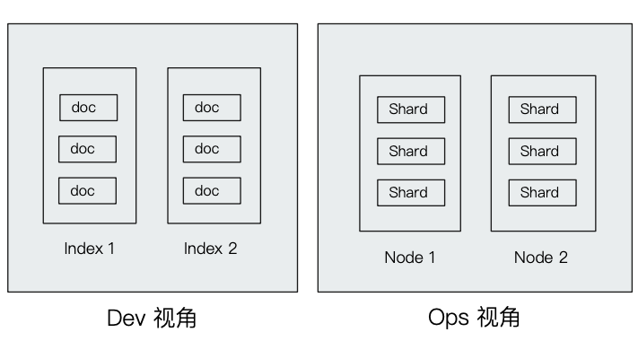
1-2 文档（Document)
-
Elasticsearch是面向文档的，文档是所有可搜索数据的最小单位 。
- 日志文件中的日志项 。
- 一部电影的具体信息／一张唱片的详细信息 。
- MP3播放器里的一首歌／一篇PDF文档中的具体内容
-
文档会被序列化成JSON格式，保存在Elasticsearch中
- JSON对象由字段组成，
- 每个字段都有对应的字段类型（字符串／数值／布尔／日期／二进制／范围类型）
- 每个文档都有一个Unique ID
- 你可以自己指定ID
- 或者通过Elasticsearch自动生成
1-3 JSON文档
- 一篇文档包含了一系列的字段。类似数据库表中一条记录
- JSON文档，格式灵活，不需要预先定义格式
- 字段的类型可以指定或者通过Elasticsearch自动推算
- 支持数组／支持嵌套
movieId,title,genres
1,Toy Story (1995),Adventure|Animation|Children|Comedy|Fantasy
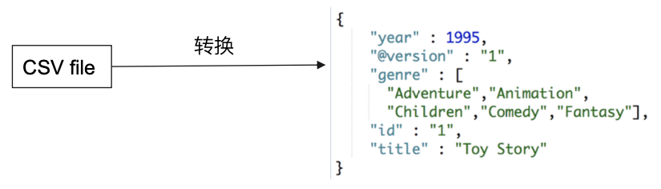
1-4 文档的元数据
元数据，用于标注文档的相关信息
_index—— 文档所属的索引名_type—— 文档所属的类型名_Id—— 文档唯一Id_source:文档的原始JSON数据_all：整合所有字段内容到该字段，6.0已被废除_version：文档的版本信息_score：相关性打分_seq_no: 文档版本号，作用同_version（相当于学生编号，每个班级的班主任为学生分配编号，效率要比学校教务处分配来的更加高效，管理起来更方便）_primary_term：文档所在位置（相当于班级）
GET movies/_doc/1
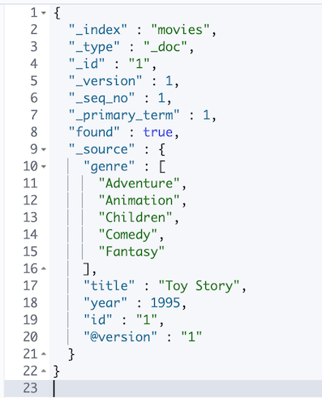
1-5 索引
Index一索引是文档的容器，是一类文档的结合
- Index体现了逻辑空间的概念：每个索引都有自己的Mapping定义，用于定义包含的文档的字段名和字段类型
- Shard体现了物理空间的概念：索引中的数据分散在Shard上
索引的Mapping与Settings
- Mapping定义文档字段的类型
- Setting定义不同的数据分布
GET movies/_settings
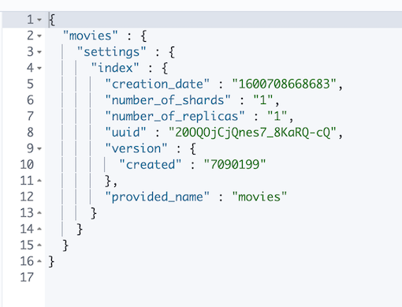
GET movies/_mapping
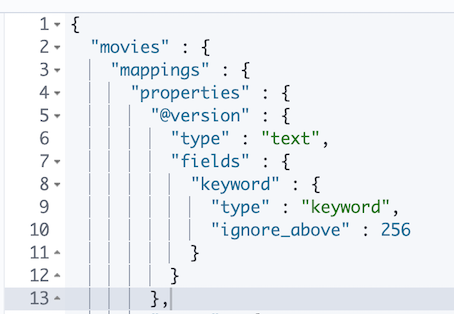
索引的不同语义
- 名词：一个Elasticsearch集群中，可以创建很多个不同的索引
- 动词：保存一个文档到Elasticsearch的过程也叫索引（indexing）
- ES中，创建一个倒排索引的过程
- 名词：一个B树索引，一个倒排索引
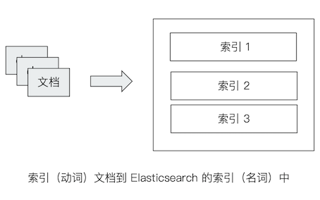
1-5 Type
- 在7.0之前，一个Index可以设置多个 Types
- 6.0开始，Types已经被Deprecated。 7.0开始， 一个索引只能创建一个Type ——
"_doc"
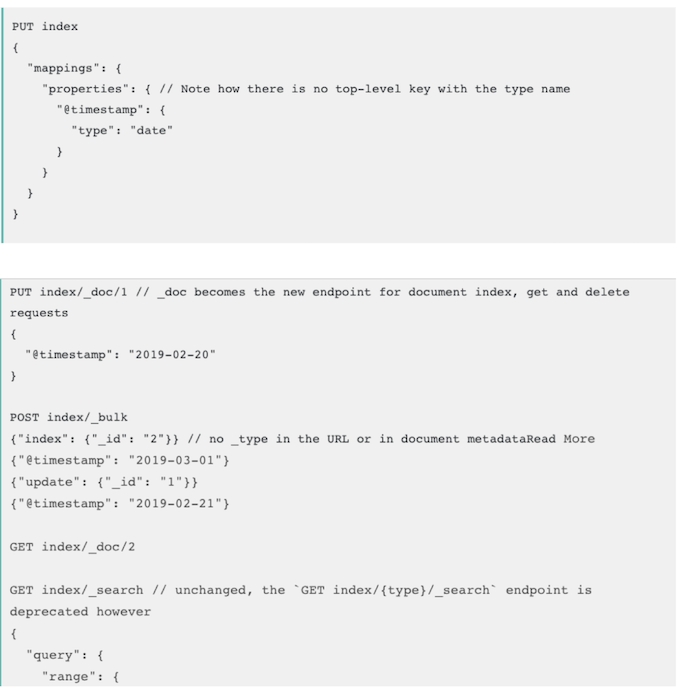
1-6 抽象与类比
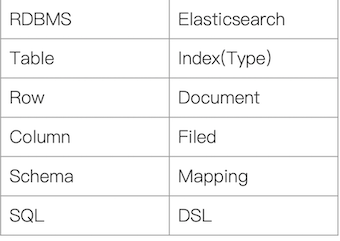
- 在7.0之前，一个Index可以设置多个 Types
- 6.0开始，Types已经被Deprecated。 7.0开始， 一个索引只能创建一个Type ——
"_doc" - 传统关系型数据库和Elasticsearch的区别
- Elasticsearch - Schemaless／相关性／高性能全文检索
- RDMS一事务性／Join
1-7 ES Rest API
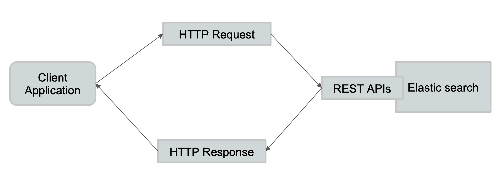
一些基本的API
- Indices
- 创建index
PUT Movies
- 创建index
- 查看所有Index
_cat/indices
http://192.168.33.12:9200/_cat/indices?v
health status index uuid pri rep docs.count docs.deleted store.size pri.store.size
green open movies 20OQOjCjQnes7_8KaRQ-cQ 1 1 9744 0 2.5mb 1.2mb
green open .apm-custom-link PG6aV6PHSiuu20nHyL34cA 1 1 0 0 416b 208b
green open kibana_sample_data_ecommerce ePmp_2DuRM2mG5DjzjVjAA 1 1 4675 0 8.6mb 4.2mb
green open .kibana_task_manager_1 0yGSkLnGTRqsUEhmjxRbbQ 1 1 6 2472 885.3kb 447.3kb
green open .kibana-event-log-7.9.1-000001 pjjQKzxCQQ20JAj7VIeneA 1 1 4 0 43.2kb 21.6kb
green open .apm-agent-configuration 5NgEYxbLRomit_d0J06BwA 1 1 0 0 416b 208b
green open kibana_sample_data_logs bvpwbU64RhiOcuhkYBKahA 1 1 14074 0 18.4mb 9.2mb
green open .kibana_1 52ji4WVfQIOUkj77Gy3d6w 1 1 333 0 22.9mb 11.4mb
green open kibana_sample_data_flights 23Vm4RG8Rlu8uikrNJkzlg 1 1 13059 0 11.8mb 5.9mb
1-8 Demo
- 查看一些与index的相关API
- 进入Kinbana Index Management界面，探索Index相关的信息
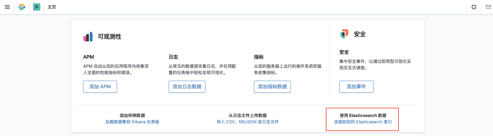
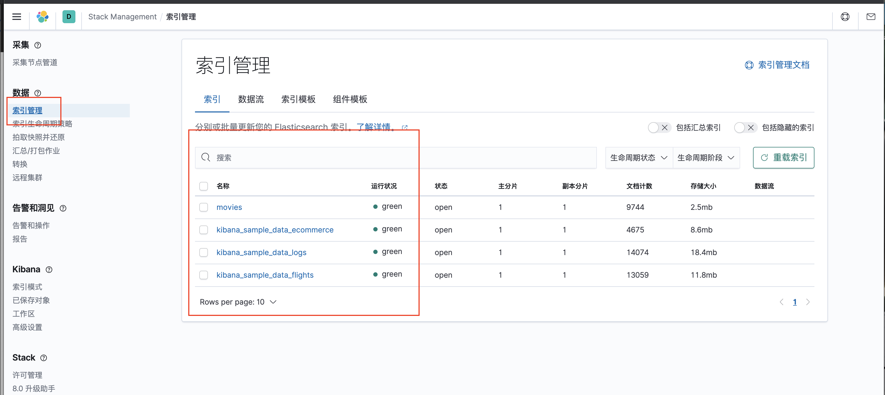
Setting
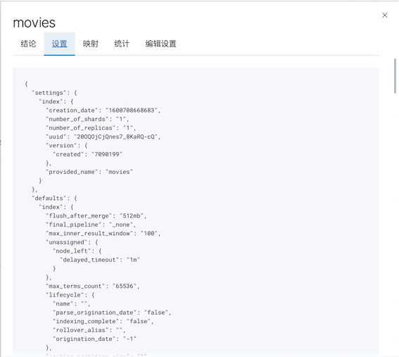
Mapping
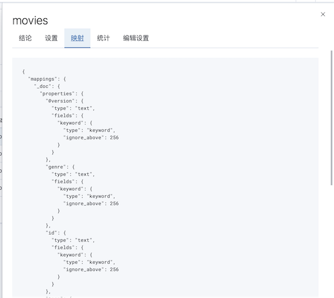
- 为什么不再支持单个Index下，多个Typs https://www.elastic.co/cn/blog/moving-from-types-to-typeless-apis-in-elasticsearch-7-0
- CAT Index API https://www.elastic.co/guide/en/elasticsearch/reference/7.1/cat-indices.html
#查看索引相关信息
GET kibana_sample_data_ecommerce
#查看索引的文档总数
GET kibana_sample_data_ecommerce/_count
#查看前10条文档，了解文档格式
POST kibana_sample_data_ecommerce/_search
{
}
#_cat indices API
#查看indices
GET /_cat/indices/kibana*?v&s=index
#查看状态为绿的索引
GET /_cat/indices?v&health=green
#按照文档个数排序
GET /_cat/indices?v&s=docs.count:desc
#查看具体的字段
GET /_cat/indices/kibana*?pri&v&h=health,index,pri,rep,docs.count,mt
#How much memory is used per index?
GET /_cat/indices?v&h=i,tm&s=tm:desc
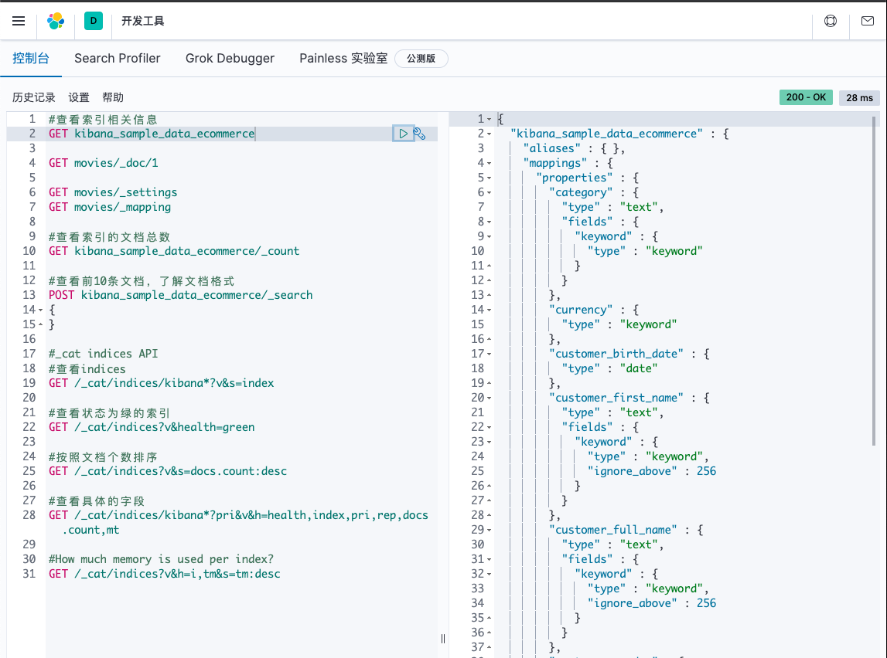
2、集群／节点／分片／副本
2-1 分布式系统的可用性与扩展性
高可用性
- 服务可用性一允许有节点停止服务
- 数据可用性一部分节点丢失不会丢失数据
可扩展性
- 请求量提升／数据的不断增长（将数据分布到所有节点上)
2-2 分布式特性
-
Elasticsearch的分布式架构的好处
- 存储的水平扩容
- 提高系统的可用性部分节点停止服务整个集群的服务不受影响
-
Elasticsearch的分布式架构
- 不同的集群通过不同的名字来区分默认名字"elasticsearch"
- 通过配置文件修改或者在命令行中
-E cluster.neme=jx进行设定 - 一个集群可以有一个或者多个节点
2-3 节点
- 节点是一个Elasticsearch的实例
- 本质上就是一个JAVA进程
- 一台机器上可以运行多个进程，但是生产环境一般建议一台机器上只运行一个Elasticsearch实例
- 每一个节点都有名字，每一个节点在启动之后通过配置文件配置成者启动时候
-E node.name=node1指定 - 会分配一个
UID保存在data目录下
2-4 Master-eligible nodes和Master Node
- 每个节点启动后默认就是一个Master eligible节点
- 可以设置
node.master=false禁止
- 可以设置
Master-eligible节点可以参加选主流程成为Master节点- 当第一个节点启动时候它会将自己选举成Master节点
- 每个节点上都保存了集群的状态只有Master节点才能修改集群的状态信息 。
- 集群状态(Cluster State)维护了一个集群中必要的信息
- 所有的节点信息
- 所有的索引和其相关的Mapping与Setting信息
- 分片的路由信息
- 集群状态(Cluster State)维护了一个集群中必要的信息
- 任意节点都能修改信息会导致数据的不一致性
2-5 Data Node&Coordinating Node
-
Data Node
- 可以保存数据的节点叫做
Data Node。负责保存分片数据。在数据扩展上起到了至关重要的作用
- 可以保存数据的节点叫做
-
Coordinating Node
- 负责接受
Client的请求将请求分发到合适的节点最终把结果汇集到一起 - 每个节点默认都起到了
Coordinating Node的职责
- 负责接受
2-6 其他的节点类型
- Hot & Warm Node
- 不同硬件配置的
Data Node用来实现Hot & Warm架构降低集群部署的成本
- 不同硬件配置的
- Machine Learning Node
- 负责跑机器学习的Job用来做异常检测
- Tribe Node
- (5.3开始使用Cross Cluster Search) Tribe Node连接到不同的Elasticsearoh集群, 并且支持将这些集群当成一个单独的集群处理
2-7 配置节点类型
- 开发环境中一个节点可以承担多种角色
- 生产环境中，应该设置单一的角色的节点(dedicated node)
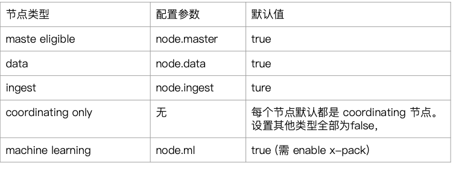
2-8 分片（Primary Shard&Replica Shard)
-
主分片，用以解决数据水平扩展的问题。通过主分片，可以将数据分布到集群内的所有节点之上
- 一个分片是一个运行的Lucene的实例
- 主分片数在索引创建时指定，后续不允许，修改除非Reindex
-
副本用以解决数据高可用的问题分片。是主分片的拷贝
- 副本分片数，可以动态题调整
- 增加副本数，还可以在一定程度上提高服务的可用性（读取的吞吐）
2-9 分片（Primary Shard&Replica Shard)
- 一个三节点的集群中，blogs索引的分片分布情况
- 思考：增加一个节点或改大主分片数对系统的影响？
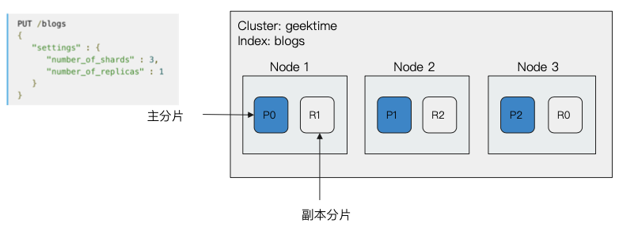
2-10 分片的设定
- 对于生产环境中分片的设定需要提前做好容量规划
- 分片数设置过小
- 导致后续无法增加节点实现水平扩展
- 单个分片的数据量太大导致数据重新分配耗时
- 分片数设置过大7.0开始默认主分片设置成，解决了
over-sharding的问题- 影响搜索结果的相关性打分影响统计结果的准确性
- 单个节点上过多的分片会导致资源浪费同时也会影响件能
- 分片数设置过小
2-11 分片的设定
- Green——主分片与副本都正常分配
- Yellow——主分片全部正常分配有副本分片未能正常分配
- Red——有主分片未能分配
- 例如当服务器的磁盘容量超过55％时,去创建了一个新的索引
GET _cluster/health
{
"cluster_name" : "jx",
"status" : "green",
"timed_out" : false,
"number_of_nodes" : 2,
"number_of_data_nodes" : 2,
"active_primary_shards" : 10,
"active_shards" : 20,
"relocating_shards" : 0,
"initializing_shards" : 0,
"unassigned_shards" : 0,
"delayed_unassigned_shards" : 0,
"number_of_pending_tasks" : 0,
"number_of_in_flight_fetch" : 0,
"task_max_waiting_in_queue_millis" : 0,
"active_shards_percent_as_number" : 100.0
}
2-12 DEMO
- CAT API
- http://localhost:9200/_cat/nodes
- 查看索引和分片
GET _cat/nodes
172.22.0.4 64 96 3 0.08 0.11 0.15 dilmrt * es79
172.22.0.5 66 96 3 0.08 0.11 0.15 dilmrt - es7_02
- 设置分片数
- Kibana + Cerebro界面介绍
GET _cluster/health
GET _cat/nodes?v
GET /_nodes/es79,es7_02
GET /_cat/nodes?v
GET /_cat/nodes?v&h=id,ip,port,v,m
GET _cluster/health
GET _cluster/health?level=shards
GET /_cluster/health/kibana_sample_data_ecommerce,kibana_sample_data_flights
GET /_cluster/health/kibana_sample_data_flights?level=shards
#### cluster state The cluster state API allows access to metadata representing the state of the whole cluster. This includes information such as
GET /_cluster/state
#cluster get settings
GET /_cluster/settings
GET /_cluster/settings?include_defaults=true
GET _cat/shards
GET _cat/shards?h=index,shard,prirep,state,unassigned.reason
GET _cat/nodes?v
ip heap.percent ram.percent cpu load_1m load_5m load_15m node.role master name
172.22.0.4 52 96 5 1.11 0.47 0.31 dilmrt * es79
172.22.0.5 46 96 5 1.11 0.47 0.31 dilmrt - es7_02
GET /_nodes/es79,es7_02
{
"_nodes" : {
"total" : 2,
"successful" : 2,
"failed" : 0
},
"cluster_name" : "jx",
"nodes" : {
"lTFD6qBCQ460xdW8XFgaIg" : {
"name" : "es7_02",
"transport_address" : "172.22.0.5:9300",
"host" : "172.22.0.5",
"ip" : "172.22.0.5",
"version" : "7.9.1",
"build_flavor" : "default",
"build_type" : "docker",
"build_hash" : "083627f112ba94dffc1232e8b42b73492789ef91",
"total_indexing_buffer" : 50331648,
"roles" : [
"data",
"ingest",
"master",
"ml",
"remote_cluster_client",
"transform"
],
...
GET /_cat/nodes?v&h=id,ip,port,v,m
id ip port v m
L7jf 172.22.0.4 9300 7.9.1 *
lTFD 172.22.0.5 9300 7.9.1 -
GET _cluster/health?level=shards
{
"cluster_name" : "jx",
"status" : "green",
"timed_out" : false,
"number_of_nodes" : 2,
"number_of_data_nodes" : 2,
"active_primary_shards" : 10,
"active_shards" : 20,
"relocating_shards" : 0,
"initializing_shards" : 0,
"unassigned_shards" : 0,
"delayed_unassigned_shards" : 0,
"number_of_pending_tasks" : 0,
"number_of_in_flight_fetch" : 0,
"task_max_waiting_in_queue_millis" : 0,
"active_shards_percent_as_number" : 100.0,
"indices" : {
"movies" : {
"status" : "green",
"number_of_shards" : 1,
"number_of_replicas" : 1,
"active_primary_shards" : 1,
"active_shards" : 2,
"relocating_shards" : 0,
"initializing_shards" : 0,
"unassigned_shards" : 0,
"shards" : {
"0" : {
"status" : "green",
"primary_active" : true,
"active_shards" : 2,
"relocating_shards" : 0,
"initializing_shards" : 0,
"unassigned_shards" : 0
}
}
},
...
GET /_cluster/health/kibana_sample_data_ecommerce,kibana_sample_data_flights
{
"cluster_name" : "jx",
"status" : "green",
"timed_out" : false,
"number_of_nodes" : 2,
"number_of_data_nodes" : 2,
"active_primary_shards" : 2,
"active_shards" : 4,
"relocating_shards" : 0,
"initializing_shards" : 0,
"unassigned_shards" : 0,
"delayed_unassigned_shards" : 0,
"number_of_pending_tasks" : 0,
"number_of_in_flight_fetch" : 0,
"task_max_waiting_in_queue_millis" : 0,
"active_shards_percent_as_number" : 100.0
}
GET /_cluster/health/kibana_sample_data_flights?level=shards
{
"cluster_name" : "jx",
"status" : "green",
"timed_out" : false,
"number_of_nodes" : 2,
"number_of_data_nodes" : 2,
"active_primary_shards" : 1,
"active_shards" : 2,
"relocating_shards" : 0,
"initializing_shards" : 0,
"unassigned_shards" : 0,
"delayed_unassigned_shards" : 0,
"number_of_pending_tasks" : 0,
"number_of_in_flight_fetch" : 0,
"task_max_waiting_in_queue_millis" : 0,
"active_shards_percent_as_number" : 100.0,
"indices" : {
"kibana_sample_data_flights" : {
"status" : "green",
"number_of_shards" : 1,
"number_of_replicas" : 1,
"active_primary_shards" : 1,
"active_shards" : 2,
"relocating_shards" : 0,
"initializing_shards" : 0,
"unassigned_shards" : 0,
"shards" : {
"0" : {
"status" : "green",
"primary_active" : true,
"active_shards" : 2,
"relocating_shards" : 0,
"initializing_shards" : 0,
"unassigned_shards" : 0
}
}
}
}
}
## cluster state The cluster state API allows access to metadata representing the state of the whole cluster. This includes information such as
GET /_cluster/state
{
"cluster_name" : "jx",
"cluster_uuid" : "r-I8BtMKRTyZOuYqnnm5VQ",
"version" : 160,
"state_uuid" : "8oYBvskARIy0NVpgfd4tsA",
"master_node" : "L7jf3HA8TqOEtNY8BrU82A",
"blocks" : { },
"nodes" : {
"L7jf3HA8TqOEtNY8BrU82A" : {
"name" : "es79",
"ephemeral_id" : "N2k4LdbnRwCUbI1i8c1Rpw",
"transport_address" : "172.22.0.4:9300",
"attributes" : {
"ml.machine_memory" : "1927524352",
"xpack.installed" : "true",
"transform.node" : "true",
"ml.max_open_jobs" : "20"
}
},
...
# cluster get settings
GET /_cluster/settings
{
"persistent" : { },
"transient" : { }
}
GET /_cluster/settings?include_defaults=true
{
"persistent" : { },
"transient" : { },
"defaults" : {
"cluster" : {
"max_voting_config_exclusions" : "10",
"auto_shrink_voting_configuration" : "true",
"election" : {
"duration" : "500ms",
"initial_timeout" : "100ms",
"max_timeout" : "10s",
"back_off_time" : "100ms",
"strategy" : "supports_voting_only"
},
"no_master_block" : "write",
"persistent_tasks" : {
"allocation" : {
"enable" : "all",
"recheck_interval" : "30s"
}
},
...
GET _cat/shards
.kibana_1 0 p STARTED 348 11.4mb 172.22.0.5 es7_02
.kibana_1 0 r STARTED 348 13mb 172.22.0.4 es79
kibana_sample_data_logs 0 p STARTED 14074 9.2mb 172.22.0.5 es7_02
kibana_sample_data_logs 0 r STARTED 14074 9.2mb 172.22.0.4 es79
.apm-custom-link 0 r STARTED 0 208b 172.22.0.5 es7_02
.apm-custom-link 0 p STARTED 0 208b 172.22.0.4 es79
.kibana-event-log-7.9.1-000001 0 r STARTED 4 21.6kb 172.22.0.5 es7_02
.kibana-event-log-7.9.1-000001 0 p STARTED 4 21.6kb 172.22.0.4 es79
ilm-history-2-000001 0 r STARTED 172.22.0.5 es7_02
ilm-history-2-000001 0 p STARTED 172.22.0.4 es79
.kibana_task_manager_1 0 p STARTED 6 565.8kb 172.22.0.5 es7_02
.kibana_task_manager_1 0 r STARTED 6 564.6kb 172.22.0.4 es79
kibana_sample_data_ecommerce 0 p STARTED 4675 4.2mb 172.22.0.5 es7_02
kibana_sample_data_ecommerce 0 r STARTED 4675 4.3mb 172.22.0.4 es79
kibana_sample_data_flights 0 r STARTED 13059 5.9mb 172.22.0.5 es7_02
kibana_sample_data_flights 0 p STARTED 13059 5.9mb 172.22.0.4 es79
movies 0 p STARTED 9744 1.2mb 172.22.0.5 es7_02
movies 0 r STARTED 9744 1.2mb 172.22.0.4 es79
.apm-agent-configuration 0 r STARTED 0 208b 172.22.0.5 es7_02
.apm-agent-configuration 0 p STARTED 0 208b 172.22.0.4 es79
GET _cat/shards?h=index,shard,prirep,state,unassigned.reason
.kibana_1 0 p STARTED
.kibana_1 0 r STARTED
kibana_sample_data_logs 0 p STARTED
kibana_sample_data_logs 0 r STARTED
.apm-custom-link 0 r STARTED
.apm-custom-link 0 p STARTED
.kibana-event-log-7.9.1-000001 0 r STARTED
.kibana-event-log-7.9.1-000001 0 p STARTED
ilm-history-2-000001 0 r STARTED
ilm-history-2-000001 0 p STARTED
.kibana_task_manager_1 0 p STARTED
.kibana_task_manager_1 0 r STARTED
kibana_sample_data_ecommerce 0 p STARTED
kibana_sample_data_ecommerce 0 r STARTED
kibana_sample_data_flights 0 r STARTED
kibana_sample_data_flights 0 p STARTED
movies 0 p STARTED
movies 0 r STARTED
.apm-agent-configuration 0 r STARTED
.apm-agent-configuration 0 p STARTED
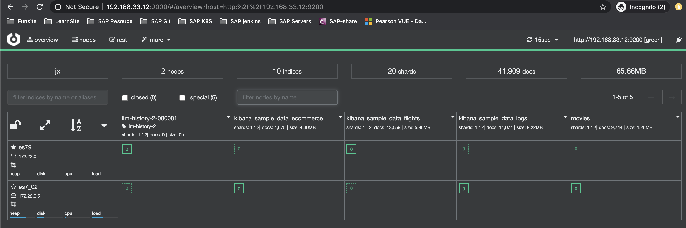
$ docker stop es7_02
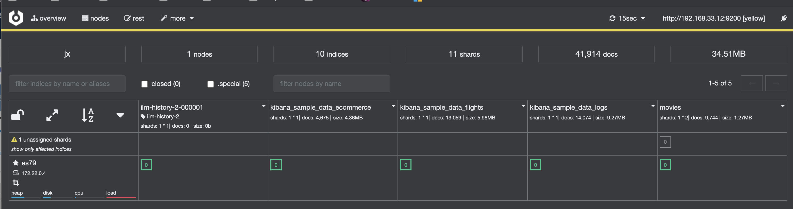
2-13 本节回顾
- 一个节点是运行Elasticsearah的Java进程
- 一个集群由1到多个节点共同组成每个节点可以承担不同的最色
- 一份主分片是一个Lucene的实例索引的一部分成全部数据
- 一个副本分片是一个主分片的拷贝
- Elasticsearch通过分片可以实现水平扩展和数据可用陛
- 集群的三种健康状态Shard的不同状态
Reference
- CAT Nodes API https://www.elastic.co/guide/en/elasticsearch/reference/7.1/cat-nodes.html
- Cluster API https://www.elastic.co/guide/en/elasticsearch/reference/7.1/cluster.html
- CAT Shards API https://www.elastic.co/guide/en/elasticsearch/reference/7.1/cat-shards.html